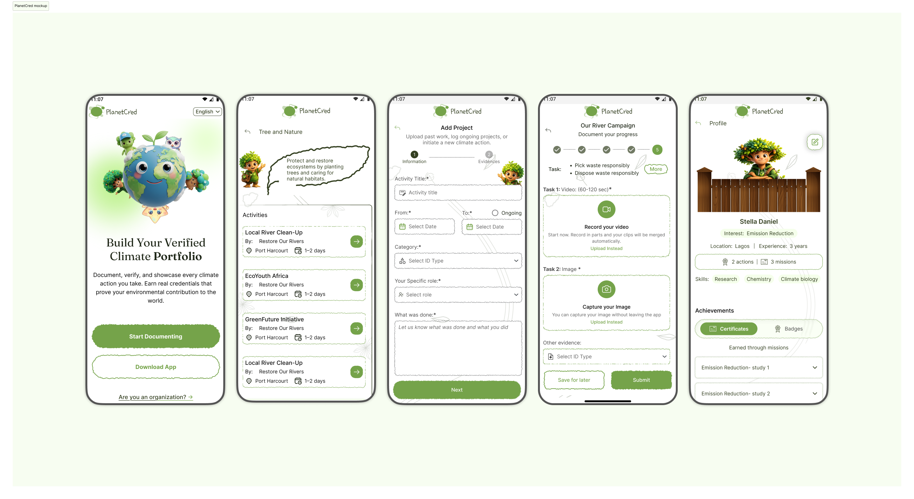

×
A cross-platform climate action platform that enables users to document, verify, and showcase environmental contributions through a trusted portfolio system.
Design files and detailed mockups are not publicly available, as this project is part of ongoing work with a company.
Every day, people do genuinely good things for the environment: cleaning up litter, planting trees, cutting waste. Almost none of it gets recorded anywhere, and there's no easy way to prove it happened.
Without a way to verify that effort, organisations end up funding claims they can't actually confirm, and genuine contributors get lost in the noise.
PlanetCred lets people submit evidence of their environmental actions and get that effort formally verified. Individuals build a credible record of their impact. Organisations get a trustworthy way to track it.
Who is this actually for, and what do they need from it?This section covers the people PlanetCred serves and what frustrates them today.
So how does an action someone takes in the real world become verified proof?This section walks through the journey from taking action to earning recognition for it.
Designing a seamless journey from participation to certification.

What does this actually look like in the product?A limited prototype, shared here under NDA restrictions.
IMPORTANT: A limited prototype is displayed due to NDA restrictions.
This project taught me how much trust shapes any system built on user submissions. Getting the balance right between simplicity and credibility meant carefully structuring every flow and every piece of feedback. It also showed me how much gamification and visual guidance can do for engagement, when they're used with purpose instead of as decoration.
This project was completed as part of my work with a company. Due to confidentiality, some details have been simplified and certain aspects of the system are not shown. All product rights and ownership belong to the organization.